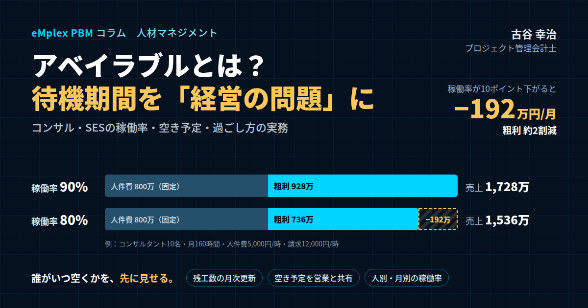

アベイラブルとは？コンサル・SESの待機期間を「経営の問題」として管理する―稼働率・空き予定・過ごし方の実務
結論：アベイラブルは「個人の問題」ではなく「経営の問題」。起きてから対処するより、起きる前に見せる
最初に結論を申し上げます。アベイラブル、つまり社員がどのプロジェクトにもアサインされずに次の案件を待っている状態は、本人の能力や努力の問題として片づけられがちです。しかし、会社の側から見れば、それは売上を生まない時間に人件費だけが発生している状態であり、全社の利益を直接押し下げる、経営の問題です。そして、アベイラブルを減らす最も効果的な方法は、起きてから次の案件を探すことではなく、誰がいつ空くのかを一、二か月前に見えるようにし、営業と要員の計画をそれに合わせて動かすことです。そのための土台が、精度の高い工数の記録と、案件ごとの残りの工数の月次の更新です。
アベイラブルという言葉は、主に外資系のコンサルティングファームで使われてきました。英語のavailable、つまり「手が空いている」「すぐに利用できる」という意味から来ており、「アベる」「アベになる」といった言い方もされます。システム開発のSESや受託開発の会社では「待機」や「ベンチ」、広告や制作の会社では「手空き」と呼ばれることもあります。呼び方は違っても、構造は同じです。人の時間が売上を生み出すプロジェクト型ビジネスでは、どの会社もこの問題と向き合っています。
アベイラブルは、社員の立場から見ると、会社に所属しながら次の仕事を待つ期間です。過ごし方次第では、日々の業務に追われてできなかった学び直しや、キャリアを見つめ直す貴重な機会にもなります。一方、会社の立場から見ると、入れるプロジェクトがないために待機してもらっている状態であり、その間の人件費は、どの案件の売上でも回収されません。
私はプロジェクト管理会計の専門家として、これまで200社を超えるプロジェクト型企業の経営管理を支援してきました。コンサルティングファーム、SESや受託開発の会社、広告や制作の会社など、人の稼働が収益の中心にある会社では、アベイラブルの管理が、利益の安定に直結する経営の課題であることを繰り返し見てきました。個々の案件がすべて黒字でも、アベイラブルの時間が増えれば、会社全体の利益は削られていきます。案件ごとの採算だけを見ていては、この損失は見えません。
新卒で入社した朋友建設でも、形は違いますが同じ問題がありました。工事と工事の間に、現場の技術者の手が空く時期が生まれ、その間の人件費はどの工事の原価にもならず、会社の利益を圧迫していました。会社が和議という局面を迎える過程で、人の時間がどこに使われているのかが経営から見えていなかったことの重さを知りました。業種は違っても、人の時間が売上と原価の両方を生み出す事業では、使われなかった時間の管理が、経営の根幹に関わるのです。
私自身、エンプレックスでCFOを務めていた頃、案件ごとの採算の管理を整える中で、案件に紐づかない時間の大きさに驚かされた経験があります。案件ごとに見れば予算どおりに進んでいても、社員ごとに一か月の時間を集計すると、どの案件にも入っていない時間が想定以上に多い社員がいました。その時間は、案件の原価にはならず、会社全体の費用として静かに利益を圧迫していたのです。案件の端境期にあたる社員の次のアサインが決まるのが遅れ、数週間の空白が繰り返し生まれていたことが、主な原因でした。
本稿では、アベイラブルの意味と期間の目安を整理したうえで、アベイラブルが生まれる構造的な理由、稼働率とアベイラブルが会社の収支に与える影響、アベイラブルの時間の記録の仕方、アベイラブルを減らすための運用、アベイラブルの期間を投資の時間に変える工夫、そして原因の切り分け方と組織としての配慮までを、会社の経営管理の視点から実務的にお伝えします。
なお、アベイラブルの期間をどう過ごすかという社員個人の視点も大切です。本稿では、会社の視点を中心にしながら、社員の過ごし方についても、会社がどう支援できるかという観点から触れていきます。
本稿の数値例が示すように、アベイラブルの影響は、決して小さなものではありません。十名の会社でも、稼働率の十ポイントの差は、年間で二千万円を超える利益の差になります。この金額は、多くの会社にとって、新しい人材を一人、二人採用できるほどの大きさです。アベイラブルを管理することは、会社の成長のための原資を生み出すことでもあるのです。
アベイラブルの問題は、会社の成長の段階によっても姿を変えます。社員が十数人の段階では、経営者が全員の状況を把握し、空いた人に直接声をかけて次の仕事を割り振ることができます。しかし、社員が数十人、百人と増えると、誰がいつ空くのかを経営者が把握することは不可能になります。その段階で仕組みを作っていなければ、アベイラブルは、誰にも気づかれないまま、会社の利益を削り続けることになります。
本稿でお伝えする考え方は、コンサルティングやSESに限らず、設計事務所、広告や制作の会社、Web制作の会社など、社員の時間を顧客の案件に投入して売上を得ているすべてのプロジェクト型ビジネスに当てはまります。呼び方が違っても、使われなかった時間をどう把握し、どう減らし、どう生かすかという課題は共通しているからです。
アベイラブルとは：意味、業界ごとの呼び方、そして期間の目安
改めて、アベイラブルとは何かを整理しておきましょう。
コンサルタントやエンジニアは、基本的にプロジェクトの単位で働きます。一つのプロジェクトが終わり、次のプロジェクトが始まるまでの間に、どのプロジェクトにもアサインされていない時期が生まれることがあります。この状態を、コンサルティングの業界では「アベイラブル」と呼びます。「このプロジェクトに参加するまで、二か月ほどアベイラブルでした」というように使います。英語圏のファームでは「ビーチ」と呼ばれることもあります。
業界ごとに、呼び方は異なります。コンサルティングの業界では、アベイラブル、アベ、ビーチ。SESや受託開発の業界では、待機、ベンチ。広告や制作の業界では、手空き、空き。いずれも、プロジェクトや常駐先、案件が決まっていない期間を指しています。
呼び方は違っても、会社の収支に与える影響は同じです。売上が立たない期間に、人件費だけが発生します。この時間が増えると、個々の案件の採算とは関係なく、会社全体の利益が減ります。この点を押さえておくことが、アベイラブルを経営の問題として捉える出発点になります。
アベイラブルの期間の目安は、通常二、三週間から、長くても一か月程度が一般的だとされています。その理由は、プロジェクトが月の初めに開始されることが多く、その前の月にアサインの面談が行われることが多いためです。前のプロジェクトが月の途中で終われば、次のプロジェクトが始まる翌月の初めまでの数週間が、アベイラブルの期間になります。
アベイラブルの期間は、厳しいプロジェクトを終えた社員にとって、心身を回復させるための、いわばリハビリの期間として機能することもあります。長期間にわたって高い負荷のもとで働いてきた社員が、次のプロジェクトに入る前に一息つくことには、一定の意味があります。
しかし、アベイラブルの期間が数か月にわたって続く場合は、事情が異なります。後ほど述べるように、案件と本人のスキルや希望の不一致、営業と要員の計画の連携の不足といった、何らかの構造的な原因があることが多く、本人と会社の双方で対策を考えるべき段階です。
アベイラブルの期間の給与についても確認しておきます。正社員であれば、アベイラブルの期間も、給与は通常どおり支払われます。社員は会社の指示に従って社内の業務や学習に取り組んでいる状態であり、働く意思と能力がある以上、給与の支払いが止まることはありません。なお、会社の都合で社員を休業させる場合には、労働基準法の定めにより、平均賃金の六割以上の休業手当を支払う必要があります。いずれにしても、会社から見れば、アベイラブルの期間の人件費は、売上で回収されない費用として、そのまま会社の利益を押し下げることになります。
アベイラブルは、人の稼働を売るビジネスである以上、完全になくすことはできません。プロジェクトの開始と終了の時期を完璧にそろえることは不可能だからです。大切なのは、アベイラブルをゼロにすることではなく、その時間を把握し、無駄に長引かせず、そして避けられない時間を有効に使うことです。
アベイラブルの期間の長さは、会社の規模や事業の形によっても異なります。大手のファームのように案件の数が多い会社では、空いた社員を次の案件に比較的早くアサインできる一方、中小の会社では、案件の数が限られているため、一度空くと次の案件まで時間がかかることがあります。SESの会社では、顧客先への常駐の契約の終了と、次の常駐先の決定のタイミングが合わず、待機の期間が生まれることが典型的です。自社の過去のデータから、アベイラブルの期間の平均と分布を把握しておくことが、対策の出発点になります。
なお、アベイラブルの時間は、案件の端境期の待機だけではありません。案件にアサインされていても、顧客側の都合で作業が止まっている時間や、案件の規模に比べて過剰に人が配置されていて、実際には手が空いている時間も、実質的にはアベイラブルと同じです。こうした「隠れたアベイラブル」は、工数の記録の上では案件の時間として計上されるため、案件の原価を押し上げ、採算を悪化させます。案件ごとの予算の工数と実績の工数を比べ、作業の進み具合に対して工数が多すぎる案件がないかを確認することで、隠れたアベイラブルも見つけることができます。
アベイラブルという言葉には、社内で否定的な響きがつきまとうこともあります。しかし、言葉の本来の意味は「すぐに利用できる」です。会社にとって、すぐに次の案件に入れる社員がいることは、新しい案件の機会を逃さないための大切な余力でもあります。問題は、その余力が必要以上に大きく、長く続くことです。適度な余力を保ちながら、それを有効に使う。それが、アベイラブルの管理の目指す姿です。
アベイラブルの期間に、どのような立場で社員を扱うのかを、社内で明確にしておくことも大切です。アベイラブルの社員は、どの部署の、誰の指示のもとで、どの業務に取り組むのか。この点が曖昧だと、社員は誰に相談すればよいのか分からず、期間を無為に過ごしてしまいます。アベイラブルの期間の上長や相談の窓口を決めておくことが、期間を有効に使うための前提になります。
アベイラブルが生まれる構造的な理由
アベイラブルは、なぜ生まれるのでしょうか。社内では、アベイラブルになった社員に対して、「能力が低いのではないか」「何か問題があるのではないか」という見方がされることもあります。しかし、私が多くの会社を見てきた経験から言えば、アベイラブルの原因の多くは、個人の能力ではなく、会社の仕組みの側にあります。主な理由を、構造の観点から整理してみましょう。
一つ目の理由は、案件の終了と開始のタイミングのずれです。前の案件が終わる時期と、次の案件が始まる時期が、ぴったり重なることはまれです。先ほど述べたように、プロジェクトが月の初めに始まることが多いため、月の途中で前の案件が終わると、数週間の空白が生まれます。また、顧客側の都合で次の案件の開始が延期されれば、空白はさらに長くなります。これは、ある程度は避けられない、構造的な原因です。
二つ目の理由は、営業と要員の計画の連携の不足です。誰がいつ空くのかが営業に伝わっていなければ、営業はその時期に合わせて次の案件を確保することができません。社員が空いてから次の案件を探し始めれば、提案から受注、アサインまでに時間がかかり、一か月程度のアベイラブルはほぼ確実に発生します。私の経験では、長引くアベイラブルの多くが、この連携の不足から生まれています。
三つ目の理由は、スキルや経験と案件のミスマッチです。会社には人手を必要としている案件があるのに、その案件が求める技術や業務の知識、経験と、空いている社員の持つものが合わない。この場合、案件はあっても、アサインできません。特定の技術や業界に特化した社員ほど、合う案件が限られ、アベイラブルになりやすい傾向があります。会社の受注の傾向が変わり、これまで多かった種類の案件が減ったときにも、このミスマッチは起こります。
四つ目の理由は、本人の希望と案件のミスマッチです。本人がやりたい仕事の領域やキャリアの方向がはっきりしていて、提示された案件がその希望と合わない場合です。会社としては、本人の希望を尊重したい一方で、空いている期間が長引くことも避けたい。このバランスをどう取るかは、本人との対話にかかっています。
五つ目の理由は、社内のつながりや評価の問題です。コンサルティングファームでは、プロジェクトのマネージャーが、一緒に働きたいメンバーを指名してアサインすることがよくあります。過去のプロジェクトでマネージャーとの関係が築けていなかった社員や、社内での評判が十分に伝わっていない社員は、声がかかりにくくなります。これは、本人の能力とは別に、社内の情報の流れ方やアサインの決め方に左右される問題です。
六つ目の理由は、会社全体の受注の不足です。案件そのものが足りなければ、どれだけ連携やマッチングを工夫しても、アベイラブルは減りません。ただし、コンサルティングやSESの業界では、慢性的に人手が不足していることが多く、案件が本当に足りないケースは、思われているほど多くはありません。多くの場合、問題は案件の総量ではなく、案件と人の組み合わせとタイミングにあるのです。
このように整理すると、アベイラブルの原因のうち、本人だけで解決できるものは限られていることが分かります。タイミングのずれ、営業との連携、スキルのミスマッチ、アサインの決め方。いずれも、会社の仕組みで改善できる余地が大きいものです。アベイラブルを個人の問題として片づけず、仕組みの問題として捉え直すことが、対策の第一歩になります。
これらの理由は、互いに重なり合って作用することも多いものです。営業との連携が不足しているために、空く時期に合わせた案件の確保が遅れ、急いで探した案件が本人のスキルや希望と合わず、アサインが決まらないまま時間が過ぎていく。こうした連鎖を断ち切るには、一つの原因だけに対処するのではなく、要員の情報の共有、育成、アサインの決め方を、組み合わせて見直す必要があります。
自社のアベイラブルの原因を把握するために、私がお勧めしているのは、過去一年のアベイラブルの事例を振り返ることです。アベイラブルになった社員ごとに、その期間の長さ、前の案件が終わった理由と時期、次の案件が決まるまでの経緯を整理します。いくつかの事例を並べるだけで、営業との連携の遅れが多いのか、スキルのミスマッチが多いのかといった、自社に特有の傾向が見えてきます。
もう一つ見落とされがちな理由が、会社の成長の局面での採用の先行です。今後の受注の拡大を見込んで先に社員を採用したものの、受注が見込みどおりに伸びなかった場合、新しく入社した社員を中心にアベイラブルが生まれます。採用の判断そのものは成長のために必要なものですが、受注の見通しと採用の計画の整合を確認しておかなければ、成長のための投資が、利益を圧迫するアベイラブルに変わってしまいます。
稼働率とアベイラブルが、会社の収支に与える影響
ここからは、アベイラブルが会社の収支にどのような影響を与えるのかを、数字で確認していきます。アベイラブルを管理するための基本の指標が、稼働率です。
稼働率は、稼働可能な時間のうち、案件に投入した時間の割合です。計算式で表せば、案件に投入した時間を稼働可能な時間で割り、百を掛けたものになります。稼働可能な時間とは、所定の労働時間から、休暇などの予定された不在の時間を差し引いた時間です。
稼働率の目安は、コンサルティングやSESの業界では、八十パーセントから九十パーセント程度が一つの基準とされます。ただし、営業の支援や社内のプロジェクト、教育にどれだけの時間を割く方針なのかによって、適正な水準は変わります。大切なのは、他社の目安との比較よりも、自社の稼働率を毎月同じ定義で測り続け、下がったときに原因が分かる状態にしておくことです。
では、稼働率の差は、会社の利益にどれだけの影響を与えるのでしょうか。具体的な数字で比べてみましょう。
コンサルタントが十名いる会社を考えます。一人あたりの月の稼働可能な時間は百六十時間、時間単価、つまり給与や賞与、法定福利費などを含めた一時間あたりの人件費は五千円、顧客への請求の単価は一時間あたり一万二千円だとします。
稼働率が九十パーセントの場合、十名の稼働可能な時間の合計千六百時間のうち、案件に投入する時間は千四百四十時間です。売上は、千四百四十時間に一万二千円を掛けて、一千七百二十八万円になります。人件費は、千六百時間に五千円を掛けて、八百万円です。粗利は九百二十八万円、粗利率は約五十四パーセントです。
稼働率が八十パーセントの場合、案件に投入する時間は千二百八十時間で、売上は一千五百三十六万円です。人件費は、稼働率に関係なく同じ八百万円です。粗利は七百三十六万円、粗利率は約四十八パーセントになります。
稼働率が十ポイント下がっただけで、粗利は月に百九十二万円、率にして約二割も減ります。年間に換算すれば、二千三百万円を超える差です。人件費は稼働率に関係なく同じだけかかるため、稼働率の低下は、そのまま利益の減少になるのです。しかも、この影響は、個々の案件の採算をいくら見ても表れません。個々の案件がすべて予算どおりの粗利を出していても、アベイラブルが増えれば、会社全体の利益はここで削られていきます。
もう一つ、押さえておきたい考え方があります。それは、損益分岐となる稼働率です。人件費に加えて、家賃や管理部門の費用など、会社のすべての固定費をまかなうために、最低限どれだけの稼働率が必要なのか。先ほどの例で、人件費以外の固定費が月に四百万円かかるとすれば、人件費の八百万円と合わせて、毎月一千二百万円の売上が必要です。請求の単価が一万二千円であれば、案件に投入すべき時間は千時間、稼働率にして六十二・五パーセントになります。これが、この会社の損益分岐の稼働率です。
稼働率が九十パーセントなら営業利益は月に五百二十八万円、八十パーセントなら三百三十六万円です。七十パーセントまで下がると百四十四万円に縮み、六十二・五パーセントを下回れば赤字に転落します。損益分岐の稼働率と、現在の稼働率の差が、会社の利益の余裕の大きさを示しているのです。もし損益分岐の稼働率が八十パーセントを超えているような会社であれば、少しのアベイラブルの増加で赤字になりかねません。その場合は、稼働率の改善と並行して、請求の単価や人員の構成そのものを見直す必要があります。
このように、稼働率は、会社の収益構造を理解するための最も基本的な指標です。そして、稼働率を正しく測るためには、アベイラブルの時間を正しく記録する仕組みが欠かせません。
稼働率の目標を設定する際には、職位や役割によって異なる目標を置くことも大切です。若手のメンバーには高い請求稼働率を求める一方、マネージャーやパートナーには、営業の活動や部下の育成に一定の時間を使うことを前提に、低めの請求稼働率を目標にします。全員に同じ目標を課せば、マネージャーが営業や育成の時間を削ることになり、将来の受注と組織の成長が損なわれます。
稼働率の数字を見る際には、単月ではなく、数か月の推移で見ることも大切です。単月の稼働率は、長期休暇や案件の端境期の影響で大きく動きます。三か月程度の移動平均で推移を見れば、一時的な変動と構造的な変化を見分けやすくなります。
稼働率の改善の効果は、単価の改善の効果と比べてみると、その大きさがよく分かります。先ほどの例で、稼働率を八十パーセントから九十パーセントに上げると、粗利は月に百九十二万円増えます。同じ効果を単価の引き上げで得ようとすれば、千二百八十時間の売上を百九十二万円増やす必要があるため、時間単価を一千五百円、率にして一割以上引き上げなければなりません。顧客との交渉が必要な単価の引き上げに比べて、稼働率の改善は、社内の仕組みの工夫で実現できる部分が大きいのです。
稼働率と人件費の関係は、採用の判断にも直結します。新しい社員を一人採用すれば、その人の人件費は、稼働率に関係なく毎月発生します。採用した社員がすぐに案件にアサインされなければ、その期間は丸ごとアベイラブルになり、会社の利益を押し下げます。採用の判断の際には、その社員が入社後どれくらいの期間で、どの案件に入る見込みがあるのかを、要員の見通しとあわせて確認しておくことが大切です。
アベイラブルの時間に「行き先」を用意する：記録の設計
稼働率を正しく測り、アベイラブルの実態をつかむためには、案件に紐づかない時間にも「行き先」を用意しておく必要があります。
多くの会社の工数の記録は、顧客の案件を中心に設計されています。社員は、日々の作業時間を、どの案件に使ったのかを記録します。ところが、アベイラブルの期間のように、どの案件にも入っていない時間を記録する場所がなければ、社員はどうするでしょうか。適当な案件に時間を付けてしまうか、記録そのものをやめてしまいます。前者の場合、その案件の原価が実態より大きく見え、採算が悪く見えます。後者の場合、勤怠の時間と工数の合計が合わなくなり、アベイラブルの時間がどこにも記録されないまま消えていきます。いずれの場合も、案件の採算も、アベイラブルの実態も分からなくなります。
そこで、案件に紐づかない時間のための社内の案件、つまり社内のプロジェクトコードを立て、そこに時間を記録するようにします。私がお勧めしている区分は、次のようなものです。
一つ目は、アベイラブル、つまり純粋な待機の時間です。次の案件を待っている間の、特定の業務に割り当てられていない時間です。
二つ目は、営業の支援です。提案書の作成や、顧客との打ち合わせへの同席など、受注のための活動に使った時間です。
三つ目は、社内のプロジェクトです。社内の業務の改善、ナレッジの整備、方法論の開発、社内のシステムの構築など、会社のための取り組みに使った時間です。
四つ目は、研修と学習です。社内外の研修への参加や、資格の取得のための学習など、能力の向上のために使った時間です。
五つ目は、管理の業務です。社内の会議、評価の面談、事務の手続きなど、会社の運営のための時間です。
このように区分しておくと、アベイラブルの期間に社員が何をしていたのかが見えるようになります。同じ一か月のアベイラブルでも、その大半を営業の支援や社内のプロジェクトに使っていた社員と、特定の業務がないまま待機していた社員とでは、会社にとっての意味が違います。前者の時間は、将来の受注や業務の効率化につながる投資の時間であり、後者の時間は、純粋な損失の時間です。
稼働率の計算でも、この区分が役立ちます。分子を顧客の案件に投入した時間に限った、いわゆる請求稼働率に加えて、営業の支援や社内のプロジェクトまで含めた広義の稼働率も計算できるようになります。請求稼働率は低くても、広義の稼働率が高ければ、社員の時間は会社のために使われていることになります。逆に、どちらの稼働率も低ければ、時間の使い方そのものを見直す必要があります。
ここで大切なのは、記録の負担を増やしすぎないことです。区分を細かくしすぎると、社員はどこに記録すべきか迷い、記録の精度が落ちます。五つ前後の分かりやすい区分にとどめ、それぞれの区分に何を含めるのかを、具体的な例とともに社員に示しておくことをお勧めします。
そして、勤怠の時間と工数の合計が一致しているかを、定期的に確認することです。アベイラブルの時間が記録されずに抜け落ちていれば、勤怠の時間に対して工数の合計が少なくなります。両者の照合は、アベイラブルの記録の漏れを見つけるための、最も確実な方法です。
社内のプロジェクトコードは、立てたら終わりではなく、運用のルールも決めておく必要があります。たとえば、社内のプロジェクトにも、目的と期間、責任者を定め、何をもって完了とするのかを決めておく。そうしなければ、社内のプロジェクトは、アベイラブルの時間を記録するための名目だけの箱になり、実際には何も進まないまま時間だけが記録されていきます。社内のプロジェクトも、顧客の案件と同じように、成果を確認する仕組みを持つことが大切です。
記録の区分を整えると、経営会議でも、アベイラブルの時間の使われ方を議論できるようになります。今月、アベイラブルの時間が何時間あり、そのうち何割が営業の支援に、何割が研修に使われたのか。営業の支援に使った時間が、実際の受注につながっているのか。こうした議論ができるようになれば、アベイラブルの時間は、単なる損失から、管理すべき経営の資源へと変わります。
案件に紐づかない時間の記録は、社員にとっても意味があります。アベイラブルの期間に、どの業務や学習にどれだけの時間を使ったのかが記録に残れば、その期間の取り組みを、上長に具体的に説明できます。記録がなければ、「何もしていなかった」と見られかねません。正確な記録は、アベイラブルの期間の社員の取り組みを、正当に評価してもらうための根拠にもなるのです。
記録の区分を決める際には、経理の処理との関係も確認しておくとよいでしょう。顧客の案件に投入した時間の人件費は、案件の原価として扱われます。一方、アベイラブルや社内のプロジェクト、研修の時間の人件費は、多くの場合、販売費及び一般管理費や、原価差異として扱われます。どの区分の時間を、会計上どのように扱うのかを経理の担当者と決めておけば、管理上の稼働率と、会計上の原価率の関係も説明できるようになります。
アベイラブルを減らす運用：誰がいつ空くかを、先に見せる
アベイラブルは、起きてから対処するよりも、起きる前に分かる仕組みの方が、はるかに効果的です。そのためのポイントは三つあります。
一つ目のポイントは、案件ごとに、残りの工数と終了の見込みを月次で更新することです。各案件が「あと何時間で終わるのか」「いつ終わるのか」が分かれば、そのメンバーがいつ空くのかが、一、二か月前に見えるようになります。案件の終了が予定より早まる場合も、遅れる場合も、残りの工数を毎月見直していれば、空く時期の変化に気づくことができます。
二つ目のポイントは、要員の空き予定を、営業と共有することです。誰が、いつから、どのようなスキルを持って空くのかが営業に伝わっていれば、営業はその時期に合わせて次の案件を確保しに動くことができます。私がお勧めしているのは、今後二、三か月の要員の需要と供給を一枚の表にまとめ、営業と要員の管理の担当者が、毎週あるいは隔週で確認する場を設けることです。表には、社員ごとに、現在の案件の終了の見込みと、その後の予定を並べます。受注済みの案件と、受注の見込みの案件で必要になる要員も並べます。空く予定の社員と、要員が必要な案件を、時期とスキルで突き合わせることで、アサインの調整を事前に進めることができます。
先ほど述べたように、社員が空いてから次の案件を探し始めれば、一か月のアベイラブルはほぼ確定してしまいます。逆に、空く時期が一、二か月前に分かっていれば、その時期に開始する案件を提案し、受注し、アサインの面談まで済ませておくことができます。アベイラブルを減らせるかどうかは、この「先に見せる」仕組みがあるかどうかで、大きく変わるのです。
三つ目のポイントは、稼働率を、人別・月別に並べて見ることです。会社全体の平均の稼働率だけを見ていては、原因は分かりません。社員ごとに、月ごとの稼働率を並べると、特定の人にアベイラブルが集中しているのか、全員の稼働率が一様に下がっているのかが見えてきます。特定の人に集中しているなら、先ほど述べたスキルや希望とのミスマッチ、社内のつながりの問題が疑われます。全員が下がっているなら、受注そのものの問題です。原因が違えば、打ち手も違います。
この三つは、工数の記録と案件ごとの収支が、同じ仕組みの中に入っていれば、自動的に出すことができます。工数をエクセルで集め、案件の収支は別のシートで管理していると、空き予定の表を作るだけで半日かかってしまいます。そうなると、表の更新は月に一度がやっとになり、変化に追いつけなくなります。工数の記録から、案件ごとの残りの工数と終了の見込み、社員ごとの空き予定と稼働率までが、一つのデータの流れでつながっていることが、運用を続けるための条件です。
受注の判断との連携も欠かせません。新しい案件を受注する際に、その案件を担当できる社員がいつ空くのかを確認せずに受注すれば、必要な時期に人がいない、あるいは逆に、空いている社員がいるのに外部の人材を手配してしまう、といった事態が起こります。受注の検討の段階で、要員の空き予定を確認する流れを作っておくことで、受注と要員の配置のずれを防ぎ、アベイラブルと外注費の両方を減らすことができます。
要員の空き予定の表を運用する際には、表の精度を高める工夫も必要です。案件の終了の見込みは、プロジェクトマネージャーが月次で更新しますが、楽観的な見込みが出されがちです。過去の案件で、終了の見込みと実際の終了がどれくらいずれていたかを振り返り、その傾向を踏まえて見込みを評価することで、表の精度は上がっていきます。また、受注の見込みの案件については、受注の確度とあわせて表に載せ、確度の低い案件に過度に期待して要員を確保しすぎないよう注意します。
エンプレックスでCFOを務めていた頃、要員の空き予定を営業と共有する会議を定例化したことがあります。最初は、営業の側から「空き予定を知らされても、すぐに案件を作れるわけではない」という声もありました。しかし、二か月先の空き予定が分かるようになると、営業は既存の顧客に追加の提案を早めに持ちかけるようになり、端境期のアベイラブルは目に見えて減っていきました。情報を先に共有するだけで、営業の行動が変わったのです。
空き予定を先に見せる仕組みは、採用の計画にも生かせます。今後数か月の要員の需要が供給を上回ることが分かれば、採用を前倒しで進めることができます。逆に、需要が供給を下回る見込みであれば、採用のペースを落とし、既存の社員の稼働を優先することができます。採用は、決めてから実際に人が入社するまでに時間がかかるため、先を見通した判断が欠かせません。アベイラブルを減らす仕組みは、採用の判断を誤らないための仕組みでもあるのです。
空き予定の表には、社員の希望も書き込んでおくと、アサインの調整がさらに進めやすくなります。次にどのような領域の案件に挑戦したいのか、どのような役割を担いたいのか。本人の希望が表に載っていれば、営業や要員の管理の担当者は、その希望に合う案件を意識して探すことができます。希望に沿ったアサインは、本人の意欲を高め、次のアベイラブルを防ぐことにもつながります。
避けられないアベイラブルを、「投資の時間」に変える
どれだけ運用を工夫しても、アベイラブルを完全になくすことはできません。プロジェクトの開始と終了の時期を完璧にそろえることは不可能だからです。そこで大切になるのが、避けられないアベイラブルの時間を、会社と社員の両方にとっての投資の時間に変えることです。
社員の立場から見ると、アベイラブルの期間は、日々のプロジェクトに追われてできなかったことに取り組める、貴重な機会です。実際にアベイラブルを経験した人たちに話を聞くと、次のような過ごし方が多く挙げられます。
一つは、新しい技術の習得です。プログラミングや、新しいツール、データ分析の手法など、次のプロジェクトで役立つ技術を、体系的に学び直す時間に充てる人が多くいます。
一つは、語学の勉強です。外資系のファームや、海外の顧客を持つ会社では、語学の力がアサインの幅を広げます。
一つは、資料の作成の力の向上です。提案書や報告書の構成や見せ方を学び直すことは、どのプロジェクトでも生きる力になります。
一つは、簿記や会計の知識の吸収です。顧客の経営の課題を理解するうえで、財務の知識は欠かせません。
そして、自分のキャリアを見つめ直すことです。忙しいプロジェクトの中では、自分がどのような仕事をしたいのか、どのような専門性を築きたいのかを考える余裕がありません。アベイラブルの期間は、それを考える良い機会になります。
ただし、こうした過ごし方を、社員個人の自主性だけに任せておくと、期間の使い方には大きな差が生まれます。何をすればよいのか分からず、不安を抱えたまま過ごしてしまう社員もいます。大手のコンサルティングファームで人事を担当していた方と話をした際にも、人事の部門として、アベイラブルの期間をどう過ごせば能力や成果の向上につながるのかを、社員に明確に示す必要があるという話になりました。
会社の立場からは、アベイラブルの期間に取り組める業務や学習の選択肢を、あらかじめ用意しておくことが大切です。
一つ目は、営業の支援です。アベイラブルの社員に、提案書の作成や、顧客への提案への同席を任せれば、営業の力を補うと同時に、本人が次に入るプロジェクトを自ら獲得する機会にもなります。自分が提案に関わった案件にそのままアサインされれば、アベイラブルの期間も短くなります。
二つ目は、社内のプロジェクトです。過去のプロジェクトの成果物を整理して社内のナレッジにまとめる、方法論やテンプレートを整備する、社内の業務を改善する。こうした取り組みは、日々の業務に追われる中ではなかなか進みません。アベイラブルの期間に計画的に割り当てることで、会社の資産が蓄積されていきます。
三つ目は、研修と育成です。会社として身につけてほしい技術や知識の研修のプログラムを用意しておき、アベイラブルの社員が受講できるようにします。若手の育成の担当や、他のメンバーのプロジェクトの支援に回ってもらうことも考えられます。
こうした選択肢をあらかじめ用意し、アベイラブルになった社員と上長が、期間の目標を一緒に決めることをお勧めします。たとえば、「この二週間で、この研修を修了し、この提案書の作成を支援する」といった形です。目標が明確であれば、社員は不安を抱えずに期間を過ごすことができ、会社にとっても投資の効果を確認できます。
そして、先ほど述べたように、これらの時間を区分して記録しておけば、アベイラブルの時間のうち、どれだけが投資の時間として使われ、どれだけが純粋な待機だったのかを把握できます。投資の時間の割合を高めていくことが、避けられないアベイラブルへの、会社としての最善の対応です。
アベイラブルの期間に営業の支援を任せる際には、本人の負担と成果の両方に目を配ることが大切です。提案の準備は、短期間で多くの作業が求められることもあります。また、提案が受注につながらなかった場合、本人が徒労感を抱くこともあります。提案の結果にかかわらず、その過程で本人が果たした役割を評価し、次の機会に生かせるようにすることで、営業の支援は本人にとっても意味のある経験になります。
アベイラブルの期間を投資の時間として生かせた事例を、社内で共有することも効果的です。アベイラブルの期間に習得した技術が、次のプロジェクトで顧客から高く評価された。社内のプロジェクトで整備したテンプレートが、他の案件の工数を減らした。こうした事例が共有されれば、アベイラブルの期間に対する社内の見方は変わり、社員も前向きにその期間を過ごせるようになります。
アベイラブルの期間に取り組む内容は、会社の今後の事業の方向とも結びつけておくと効果が高まります。これから受注を増やしたい領域の技術や業務の知識を、アベイラブルの社員に優先的に学んでもらえば、その領域の案件を受注した際に、すぐにアサインできる人材が育ちます。アベイラブルの期間は、会社の事業の方向に沿って人材を育てる、計画的な育成の機会にもなるのです。
原因の切り分けと、組織としての配慮
アベイラブルへの対策を考えるうえで欠かせないのが、原因の切り分けです。先ほど、稼働率を人別・月別に並べて見ることをお勧めしましたが、その結果をどう読み解き、どう手を打つかを整理しておきます。
会社全体の稼働率が一様に下がっている場合、原因は受注の不足にあることが多いと考えられます。この場合の打ち手は、営業の強化、提案の数の増加、既存の顧客への追加の提案、価格の見直しなど、受注を増やすための施策です。あわせて、受注の見通しを踏まえて、採用の計画を見直すことも検討します。
特定の社員にアベイラブルが集中している場合は、その社員ごとに原因を探ります。スキルや経験と案件のミスマッチであれば、需要の多い領域の研修を受けてもらう、経験の浅い領域の案件に、経験者と組んで入ってもらうといった、育成とアサインを組み合わせた対応が考えられます。本人の希望と案件のミスマッチであれば、本人と率直に話し合い、希望と会社の事情の折り合いをつける必要があります。社内のつながりの問題であれば、アサインの決め方そのものを見直すことが大切です。
特定の時期に全社の稼働率が下がる場合は、案件の終了の時期が集中していることが考えられます。年度末に多くの案件が終わり、年度の初めに次の案件の開始が遅れる、といった季節的な波です。この場合は、案件の開始の時期を分散させる提案や、端境期に社内のプロジェクトや研修を計画的に配置する工夫が有効です。
ここで、組織として配慮すべき点にも触れておきます。
一つは、アベイラブルの社員への見方です。先ほど述べたように、アベイラブルになった社員は、社内で「能力が低いのではないか」と見られがちです。しかし、その原因の多くは仕組みの側にあります。アベイラブルを個人の評価に直結させてしまうと、社員は不安を抱え、自分に合わない案件でも無理に引き受けようとしたり、アベイラブルを避けるために一つの案件にしがみついたりするようになります。アベイラブルの期間を、評価の減点の対象ではなく、投資の時間として位置づけ、その期間に何に取り組んだのかを評価する仕組みにすることが大切です。
一つは、社員の心の健康です。アベイラブルの期間が長引くと、社員は、自分が必要とされていないのではないかという不安や孤立感を抱えやすくなります。特に、それまで忙しく働いてきた社員ほど、急に時間ができたことに戸惑うこともあります。上長が定期的に声をかけ、次のアサインの見通しや、期間中の目標を共有することで、不安を和らげることができます。
一つは、アサインの決め方の透明性です。マネージャーの指名だけでアサインが決まる仕組みでは、社内のつながりの強い社員に案件が集中し、そうでない社員がアベイラブルになりやすくなります。要員の管理の担当者が、スキルや経験、本人の希望、育成の観点を踏まえて、全体を見てアサインを調整する役割を担うことで、アサインの機会の偏りを減らすことができます。
そして、アベイラブルの反対側にある問題にも目を向けてください。アベイラブルの社員がいる一方で、特定の社員に案件が集中し、過度な負荷がかかっていることがよくあります。稼働率が百パーセントを大きく超える社員と、アベイラブルの社員が同時に存在している状態は、会社の要員の配置がうまくいっていないことを示しています。人別の稼働率を見ることは、アベイラブルを減らすためだけでなく、過重な負荷を防ぐためにも役立つのです。
SESの会社に特有の配慮もあります。SESでは、社員が顧客先に常駐して働くことが多く、待機の期間には自社のオフィスに戻ることになります。普段は顧客先で働いている社員にとって、自社は必ずしも居心地の良い場所ではないかもしれません。待機の期間に、自社の仲間とのつながりを深める機会を作ること、たとえば社内の勉強会や、他の社員との交流の場を設けることも、社員の定着を支える大切な取り組みです。
ホリプロで経営企画を担当していた頃も、制作の仕事の端境期に、スタッフの手が空く時期が生まれていました。その時期を、次の企画の準備や、スタッフの技術の向上の機会として計画的に使えるかどうかで、次の作品の質と、スタッフの意欲が大きく変わることを実感しました。空いた時間をどう扱うかに、組織の人に対する姿勢が表れるのだと思います。
原因の切り分けの結果は、経営会議で定期的に共有することをお勧めします。今月のアベイラブルの時間がどれだけあり、その主な原因は何か。受注の不足なのか、ミスマッチなのか、タイミングのずれなのか。原因ごとに担当を決め、翌月にその効果を確認する。このサイクルを回すことで、アベイラブルへの対策は、場当たり的な対応から、継続的な改善へと変わっていきます。
アベイラブルの社員の不安を和らげるためには、次のアサインの見通しを、できるだけ早く、具体的に伝えることも大切です。「来月の中旬から、この顧客の案件に入る予定で調整している」といった見通しが伝われば、社員は安心して期間中の目標に取り組めます。見通しが立たない場合でも、どのような案件を探しているのか、本人にどのような準備をしてほしいのかを伝えることで、宙に浮いた状態を避けることができます。
導入の進め方、よくある質問、そしてまとめ
最後に、アベイラブルの管理の仕組みを導入する際の進め方を整理しておきます。
最初の段階では、現状を把握します。直近の数か月について、社員ごとに、案件に投入した時間と、案件に紐づかない時間を集計し、稼働率を計算します。勤怠の時間と工数の合計が一致しているかも確認します。この段階で、アベイラブルの時間がどれだけあり、それが特定の人や時期に偏っているのかが見えてきます。
次の段階では、記録の仕組みを整えます。アベイラブル、営業の支援、社内のプロジェクト、研修、管理の業務といった、案件に紐づかない時間の区分を設け、社員が迷わずに記録できるようにします。工数は日次で記録するルールにします。
三つ目の段階では、案件ごとの残りの工数と終了の見込みを、月次で更新する運用を始めます。そのデータをもとに、今後二、三か月の要員の空き予定の表を作り、営業と共有する場を設けます。
四つ目の段階では、アベイラブルの期間の過ごし方の選択肢を整え、アベイラブルになった社員と上長が、期間の目標を決める運用を始めます。
五つ目の段階では、人別・月別の稼働率を経営会議で定期的に確認し、原因の切り分けと打ち手の検討を行います。
導入にかかる期間の目安としては、現状の把握と記録の区分の整備に一か月程度、残りの工数の更新と空き予定の表の運用の開始に二か月程度、経営会議での定着にさらに数か月を見ておくと、無理のない計画になります。最初から全社で完璧な表を作ろうとせず、まずは一つの部門や、主要な案件に関わる社員から始めて、運用しながら広げていくことをお勧めします。
ここで、よくいただく質問にお答えしておきます。
「アベイラブルを、簡単に言うと何か」という質問です。コンサルティングファームやSESなどで、社員がどのプロジェクトにもアサインされておらず、次の案件を待っている状態のことです。
「稼働率の目安はどれくらいか」という質問です。コンサルティングやSESでは、八十パーセントから九十パーセントが一つの目安ですが、営業の支援や社内の業務の割合によって、適正な値は変わります。自社の損益分岐の稼働率を計算し、それとの差を意識することをお勧めします。
「会社としてアベイラブルを減らすには、どうすればよいか」という質問です。案件の終了の時期と、要員の空き時期を、先に見えるようにすることです。工数を案件ごとに日次で記録し、各案件の残りの工数と終了の見込みを月次で更新すれば、誰がいつ空くのかが一、二か月前に分かります。営業は、その情報をもとに次の案件を確保します。
「アベイラブルの期間中の給料はどうなるのか」という質問もあります。正社員であれば、給与は通常どおり支払われます。会社から見ると、売上のない期間の人件費がそのまま費用になるため、アベイラブルが増えると全社の利益を直接押し下げます。
まとめます。アベイラブルとは、コンサルティングやSESなどで、社員がプロジェクトにアサインされていない待機の状態であり、期間は通常二、三週間から一か月程度です。その原因の多くは、タイミングのずれ、営業との連携の不足、スキルや希望のミスマッチ、アサインの決め方といった、仕組みの側にあります。社員にとっては学び直しの機会であり、会社にとっては売上のない人件費です。稼働率が十ポイント下がれば、粗利は約二割減ります。アベイラブルを減らすには、工数の日次の記録と、案件ごとの残りの工数の月次の更新で、誰がいつ空くのかを先に見せることが鍵になります。そして、避けられないアベイラブルは、投資の時間に変えていきます。
アベイラブルの管理は、一度仕組みを作れば終わりではありません。事業の構成が変わり、受注の傾向が変われば、アベイラブルの原因も変わります。半年に一度程度、稼働率の推移、アベイラブルの期間の分布、その時間の使われ方を振り返り、仕組みが有効に機能しているかを点検してください。
私たちが提供している「eMplex PBM」は、日々の工数の記録と、案件ごとの予算・実績・着地見込みの管理を、一つの基盤で行えるサービスです。案件に紐づかない時間も社内のプロジェクトとして記録でき、社員ごと、月ごとの稼働率を自動で集計できます。案件ごとの残りの工数の見込みから、要員の空き予定を把握することにも役立ちます。
eMplex PBMでは、顧客の案件と社内のプロジェクトを同じ形で登録し、社員が日々の工数を記録すると、社員ごと、月ごとの請求稼働率と広義の稼働率が自動で集計されます。案件ごとの残りの工数の見込みを月次で更新すれば、各社員がいつ頃案件から離れるのかを把握でき、営業との要員の調整の材料として活用できます。
人の時間が価値の源泉であるプロジェクト型ビジネスにとって、アベイラブルの管理は、利益を守ることであると同時に、社員一人ひとりの時間とキャリアを大切にすることでもあります。誰がいつ空くのかを先に見せ、空いた時間を未来への投資に変える。その仕組みを、ぜひ組織として育てていただきたいと思います。